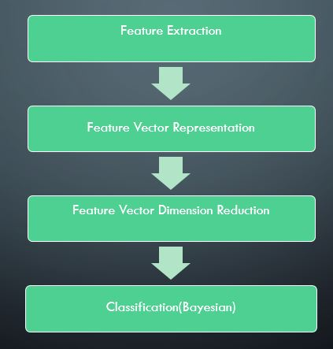

Personality is one of the fundamental aspects, by which we can understand behavioral dispositions.
It is evident that there is a strong correlation between users' personality and the way they behave on
online social network (e.g., Facebook).
This paper presents automatic recognition of Big-5 personality traits on social network (Facebook) using users' status text.
Here we present a method for detecting personality trait of an individual based on the analysis of the content of their
Facebook status updates.
Our model includes 2 different approaches for personality recognition namely "Feature based approach"
and "Trigram based approach" and a comparitive study of the results obtained from 2 approaches.
1. Introduction
For the natural and social interaction it is necessary to understand human behavior.
Behavior involves an interaction between a person's underlying personality traits and situational variables.
The situation, that a person finds himself or herself in, plays a major role on his or her reaction.
However, in most of the cases, people respond with respect to their underlying personality traits,
and gaining this insight of a web user's personality is very valuable for applications
that rely on personalisation such as:
Recommender Systems
Personalized Advertising
Online Marketing
Sentiment Analysis/Opinion Mining
Deception Detection
Social Network Analysis
and many others.
There are several theories for personality traits in the literature but the most widely used
personality traits model is the Big-5,.It describes the human personality as a vector of
five values corresponding to bipolar traits.
This is a popular model among the language and computer science researchers and it has been used as a framework for both personality traits identification and
simulations.
The five big5 personality traits includes:
Extraversion: (x/e)(sociable vs shy)This trait includes characteristics such as excitability,
sociability, talkativeness, assertiveness and high amounts of emotional expressiveness.
Neuroticism: (n)(neurotic vs calm)Individuals high in this trait tend to experienceemotional instability, anxiety, moodiness, irritability, and sadness.
Agreeableness:(a)(freindly vs uncooperative) This personality dimension includes
attributes such as trust, altruism, kindness, affection, and other prosocial behaviors.
Conscientiousness:(c)(organized vs careless) Common features of this dimension include
high levels of thoughtfulness, with good impulse control and goal-directed behaviors.
Those high in conscientiousness tend to be organized and mindful of details.
Openness: (o)(insightful vs unimaginative) This trait features characteristics such as
imagination and insight, and those high in this trait also tend to have a broad range of
interests.
Making use of the linguistic features associated with those classes, we generated different classifier for each class respectively.
2. Related Work
Many of the approaches for identifying personality have
been through the analysis of the words an individual uses
to express themselves. Researchers in automated personality identification have generally used the term linguistic style
analysis to refer to analyzing an individual through analysis
of their communications. In particular, these types of analyses look at distributions of different types of words. The
Linguistic Inquiry and Word Count (LIWC; Pennebaker et
al., 2007) dictionary is the most current set of categories.
The dictionary provides lists of words that convey various
psychological dimensions, such as words with positive emotional content or topics related to psychologically interesting phenomena.
These types of analyses have demonstrated
that it is possible to predict personality traits by looking at
the distribution of the words used by individuals, for example the use of social language is
correlated with extraversion (Mehl, Gosling, and Pennebaker 2006). Classifiers built
using these approaches have achieved results 3-10% above
chance on a large corpus of narratives across the big-five
factors (Mairesse et al. 2007).
Alternatively, automated analysis can also be done by
looking at an individual's behavior. This type of analysis
has mostly focused around network metrics on twitter or
Facebook. Users on these social-media sites are able to follow or friend other individuals (they automatically receive
their news feeds). Individuals can also rebroadcast messages
provided by their friends with or without their own comments. For example, Quercia et al. (2011) analyzed the
predictive accuracy of the personality of Twitter users based
on network metrics. Quercia et al. showed a significant correlation between emotional stability and several of the network
metrics, in contrast to expert analysis of Facebook profiles which were not able to reveal tho
3. Approach
The two different approaches that we use for Personality Recognition are:
Feature Based Approach
Trigram Based Approach
3.1Feature Based Approach
This approach involves the following steps
Feature Extraction
Feature Vector Representaion
Feature Vector Dimension Reduction
Classification
3.1.1Feature Extraction
Style based features Extraction
Sentimental Analysis
Identification of total no.of posts of author
Concept Extraction
3.1.1.1 Style based features Extraction
With the aim of modeling the style of writing, we considered readability features as well as the use of emoticons.
All these features are topic-independent.
The complete set is described below.
Each item is a list of individual features represented by frequencies and combined into a vector space model.
3.1.1.1.1Frequency of Part-of-speech(all 36)
S.No
Representation
Expansion
1.
CC
Coordinating conjunction
2.
CD
Cardinal number
3.
DT
Determiner
4.
EX
Existential there
5.
FW
Foreign word
6.
IN
Preposition or subordinating conjunction
7.
JJ
Adjective
8.
JJR
Adjective, comparative
9.
JJS
Adjective, superlative
10.
LS
List item marker
11.
MD
Modal
12.
NN
Noun, singular or mass
13.
NNS
Noun, plural
14.
NNP
Proper noun, singular
15.
NNPS
Proper noun, plural
16.
PDT
Predeterminer
17.
POS
Possessive ending
18.
PRP
Personal pronoun
19.
PRPS
Possessive pronoun
20.
RB
Adverb
21.
RBR
Adverb, comparative
22.
RBS
Adverb, superlative
23.
RP
Particle
24.
SYM
Symbol
25.
TO
to
26.
UH
Interjection
27.
VB
Verb, base form
28.
VBD
Verb, past tense
29.
VBG
Verb, gerund or present participle
30.
VBN
Verb, past participle
31.
VBP
Verb, non-3rd person singular present
32.
VBZ
Verb, 3rd person singular present
33.
WDT
Wh-determiner
34.
WP
Wh-pronoun
35.
WP$
Possessive wh-pronoun
36.
WRB
Wh-adverb
3.1.1.1.2 Frequency of Special Symbols 3.1.1.1.3 Frequency of :
1PS - First Person Singular
1PP - First Person Plural
2P - Second Person
3PS - Third Person Singular
3PP - Third Person Plural
3.1.1.1.4 Frequency of Emoticons of:
anger
disgust
fear
happy
sad
surprise
3.1.1.1.5. other features like:
Avg length of status
Punctuations count
unique words/total words
ratio of upper case words
ratio of upper case letters
3.1.1.1.6.Frequency of Health Related words 3.1.1.2 Sentiment Analysis includes the extraction of positive,negative and neutral percentage of emotions of each status update from http://text-processing.com/api/sentiment/
and get average value of it for each user. Basic Definitions: Sentiment:
A thought, view, or attitude, especially one based mainly on emotion instead of reason
Sentiment Analysis:
aka opinion mining.Sentiment Analysis is the use of natural language processing (NLP) and computational techniques to automate the extraction or classification of sentiment from typically unstructured text.
3.1.1.3 Concept Extraction:
From the linguistic aspect, we usually say that the main 'building blocks' of a sentence are
Noun Phrases (NP) and Verb Phrases (VP).
The Noun Phrases are usually the topics or objects in the sentence, or in simple words this is
what the sentence is talking about, while Verb Phrases describe some action between the objects in the sentence.
Example: 'Facebook acquired Instagram'
About Who/What? Facebook and Instagram - Noun Phrases
What happened? acquired (=acquisition) - Verb Phrase
Here we extract only the Noun Phrases from the sentence and get average value of concepts that person
talking about in his statuses.
And for Identifying concept we define some simple patterns which describe the structure of a Noun Phrase, for example:
NN = content
JJ+NN = visual content
NN+NN = content marketing
3.1.1.4 Social Networking Features:
Given in facebook dataset and those include the following:
1.
Network_size
Network size is the total number of people in the egocentric network including ego.
2.
betweenness
Ego betweenness centrality of an ego can be defined as the extent to which an ego lies between alters within the network (Freeman, 1979). Ego betweenness is high when alters are not well interconnected, and thus many of the shortest paths run trough ego.
3.
n_betweenness
As ego betweenness is related to the size of the network, it should be normalized in order to allow for comparisons between egocentric networks of different size. Normalization used here involves dividing betweenness by number of all possible pairs between alters (this method is also employed in UCInet package) (add graph showing the relation between betweenness and size and normalized betweenness and size)
4.
Density
Density indicates how many connections (edges) are there between alters as compared to the maximum possible number of edges. For an undirected egocentric graph it is calculated by dividing total number of (edges) by maximum possible number of edges. Density score here can be slightly different from one provided by UCInet as it is being calculated for the whole ego network including ego (as opposed to calculating density in the egocentric network with ego removed as it is being done in UCInet).
5.
brokerage
Is the number of alters' pairs that are not directly connected.
6.
nbrokerage
As brokerage also depend on the size of the network, it is being normalized by dividing it by the number of all possible pairs between alters
3.1.2 Feature Representation
After Extraction of all the above featueres ,we are going to represent
the given user as a vector of above features and trained 5 different classifiers
for different personality traits using Gaussian Naive Bayesian classification.
3.1.3 & 3.1.4 Feature Dimension Reducation and Classification
We used Gaussian Naive Bayesian model for the classification of given dataset.
(Since Bayesian model works fine for small data set,
and as our dataset is small of 250 Facebook users only)
Bayesian classification works fine only with limited number of features,and hence we try to reduce no.of dimensions
of feature vector using correlation coefficient clustering in removing similar/redundant features from the concept proposed in 'Feature Selection via Correlation Coefficient Clustering' by Hui-Huang Hsu and Cheng-Wei Hsieh, where the concpet includes:
Feature Selection via Correlation Coefficient Clustering
For hundreds or even thousands of collected features, there must be features that are very similar to each other(where similarity is identified by the absolute value of correlation coefficient), and we can take these features as the same kind of features. We certainly do not need to use all features of the same kind for classification. After clustering analysis identifies all different kinds of features, we can remove a great number of redundant features. The classification performance in both the computational speed and the classification accuracy can be improved with the removal of these redundant features.And uses k-means algorithm with no.of clusters as 25 to cluster the features based on absolute value of correlation coefficent.
3.2Trigram based approach
This approach includes the generation of two features (say F1 and F2)for each user status,Where "F1" represents normalized frequency of trigrams w.r.t to current personality trait and "F2" represents normalized frequency of trigrams w.r.t remaining classes
Proceducre:
Step-1:
Identify all possible trigrams w.r.t to individual personality trait
Step-2:
Iterate through individual status , identify all trigrams of respective status and compare
it with the trigram set of "respective personality trait"
and "trigrams sets of all the remaining personality traits" and increament the count F1 and F2 accordingly.
Step-3:
Normalize F1 and F2 (by dividing it with the count of trigrams in respective status)
Step-4:
Represent the given dataset in feature vector form (F1,F2)
and train each personality trait to different classifier using SVM to produce 5 different classifiers.
3.3. Architecture

Feature based approach Fig 1 represent the schematic view of "feature based approach" with 4 main steps as follows:
Feature Extraction
extract the required features as mentioned in "part-3(Approach)" for the given data set
Feature Vectore representation
represent the given data set as feature vector
Fetature vectore dimension reduction
using coorrelation coefficient clustering
Classification
using Bayesian classifier
3.4. Theory
Corpus for Personality Recognition includes: 1.mypersonality.csv
Includes author ids, Facebook statuses in raw text, gold standard labels (both classes and
scores) and several social network measures like network size, betweenness, density,
brokerage etc...
Texts have been originally collected by David Stillwell and Michal Kosinski, and
anonymized by Fabio Celli.
Each proper name of person has been replaced with a *PROPNAME* string. Famous
names, such as "Chopin" and "Mozart", and locations, such as "New York" and "Mexico",
have not been replaced.
Some more Statistics of Facebook Data(mypersonality.csv):
The data was collected from 250 different users and the number of statuses per user
ranges from 1 to 223.
From the corpus analysis, it is observed that besides words, it contains tokens such as
internet-slang (e.g. WTF-what the F***), emoticons (e.g., :-D), acronyms (e.g., BRB-be
right back) and various shorthand notations that people use in their status.
With splitting of 66%(train data) and 34%(test data) the statistics of mypersonality.csv are
as follows:
In total there are 6,545 train and 3,372 test instances after the split.
The maximum number of tokens per user status message is 89,
minimum 1 and
the average is 14.
2.essays.csv
includes authors, raw text and gold standard labels (classes only).
Consists of 2469 essays(1.9 million words) by psychology students.
Texts has been originally collected by James Pennebaker, labels are derived by z-scores
computed by Francois Mairesse and converted from scores to nominal scales by Fabio Celli
4. Evaluation and Results
In the shared task guidelines it is suggeste to use precision,recall,FI as evaluation metrics. Explanation:
To calculate precision,recall and F-Score requires confusion matrix which is explained as follows:
A confusion matrix (Kohavi and Provost, 1998) contains information about actual and
predicted classifications done by a classification system.
Performance of such systems is commonly evaluated using the data in the matrix.
Predicted
Negative
Positive
Actual
Negative
a
b
positive
c
d
The entries in the confusion matrix have the following meaning in the context of our study:
a is the number of correct predictions that an instance is negative,
b is the number of incorrect predictions that an instance is positive,
c is the number of incorrect of predictions that an instance negative, and
d is the number of correct predictions that an instance is positive.
Several standard terms have been defined for the 2 class matrix:
The accuracy (AC) is the proportion of the total number of predictions that were correct. It is determined using the equation:
AC=(a+d)/(a+b+c+d)
The recall or true positive rate (TP) is the proportion of positive cases that were correctly identified, as calculated using the equation:
True Positive Rate(TP) or recall=d/c+d
The false positive rate (FP) is the proportion of negatives cases that were incorrectly classified as positive, as calculated usingthe equation:
False Positive Rate(FP)= b/a+b
The true negative rate (TN) is defined as the proportion of negatives cases that were classified correctly, as calculated using the equation:
True Negative Rate(TN)= a/a+b
The false negative rate (FN) is the proportion of positives cases that were incorrectly classified as negative, as calculated using the equation:
False Negative Rate=c/c+d
Finally, precision (P) is the proportion of the predicted positive cases that were correct, as calculated using the equation:
Precision=d/b+d
F-score=2 (precision*recall/(precision+recall))
Obtained Values:
Personality Trait
a
b
c
d
Extraversion
31
0
13
5
Openness
0
15
0
34
Neuroticism
15
8
11
15
Agreeableness
9
16
4
20
Conscientiousness
2
22
0
25
Calculate Measures
Personality Trait
Accuracy
True Positive Rate(TP)Recall
False positive Rate(FP)
True Negative Rate(TN)
False Negative Rate
Precision
F-score
Trigram Accuracy
Extraversion
74%
0.28
0
1
0.72
1
0.44
41.17%
Openness
70%
1
1
0
0
0.695
0.82
70.58%
Neuroticism
62%
0.577
0.348
0.652
0.407
0.652
0.613
43.13%
Agreeableness
60%
0.833
0.64
0.36
0.166
0.5555
0.667
58.82%
Conscientiousness
56%
1
0.9166
0.833
0
0.532
0.695
50.98%
5. Conclusion
The result shows that the style based features gives better results over trigram approach for personality recognition,and from the results of the above approaches it can be shown that there is proper mapping between vocabulary that the person use(say in his status) and his underlying personality.
Koppel, M., Argamon, S., Shimoni, A.: Automatically categorizing written texts
by author gender. Literay and Linguistic Computing 17 (4), 401-412 (2003)